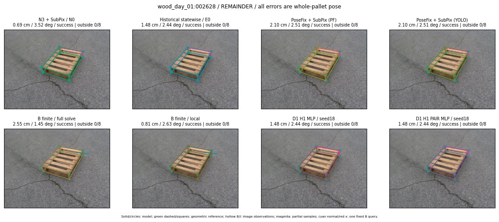

Whole-pallet pose errors; reference is a fixed geometric annotation, not certified physical GT.

Scores are uncalibrated logits. N0 retention is a numerical pose alias; it differs from H0 none or B fallback. B/I and profiles in baseline/B panels are original observations; L panels use new D1 observations. Only one deterministic supported B query is shown in a thumbnail; full support counts are below. Grey privacy rectangles edit the display copy only and are unrelated to O states; all observations were measured on original pixels. Thumbnails use JPEG quality85; detailed scientific panels are PNG.
| Method | Whole pose / cm, deg | Actual source | Selected ID | Score | Archived candidates | Eligible | N0 retained | H0 none | Fallback | Finite profiles |
|---|---|---|---|---|---|---|---|---|---|---|
| Raw YOLO + F | 0.42 cm / 3.15 deg / success | OTHER | None | N/A | N/A | N/A | False | N/A | None | N/A |
| N3 + SubPix / N0 | 0.69 cm / 3.52 deg / success | N0 | None | N/A | N/A | N/A | True | N/A | None | N/A |
| Historical statewise / E0 | 1.48 cm / 2.44 deg / success | E0_REGENERATED | None | N/A | N/A | N/A | False | N/A | False | N/A |
| PoseFix raw | 1.83 cm / 2.11 deg / success | OTHER | None | N/A | N/A | N/A | False | N/A | None | N/A |
| PoseFix + SubPix (PF) | 2.10 cm / 2.51 deg / success | OTHER | None | N/A | N/A | N/A | False | N/A | False | historical support records 9; finite audit N/A |
| PoseFix + SubPix (YOLO) | 2.10 cm / 2.51 deg / success | OTHER | None | N/A | N/A | N/A | False | N/A | False | historical support records 9; finite audit N/A |
| Historical L, seed18 | 0.69 cm / 3.52 deg / success | N0 | N0 | N/A | 84 | 84 | True | True | True | N/A |
| Historical B fixed bank | 1.48 cm / 2.44 deg / success | E0_REGENERATED | G13/ORIGINAL_WD/sample/0 | N/A | N/A | N/A | False | N/A | False | N/A |
| Historical B full | 2.55 cm / 1.45 deg / success | OTHER | NEW/B/ORIGINAL_WD/h0/G13/ORIGINAL_WD/sample/0/PROPOSED_NATIVE_YAW_0 | N/A | N/A | N/A | False | N/A | False | N/A |
| Historical edge full | 8.42 cm / 1.97 deg / failure | OTHER | NEW/edge/ORIGINAL_WD/h0/G13/ORIGINAL_WD/sample/0/PROPOSED_NATIVE_YAW_0 | N/A | N/A | N/A | False | N/A | False | N/A |
| Historical AB full | 2.55 cm / 1.45 deg / success | OTHER | NEW/AB/ORIGINAL_WD/h0/G13/ORIGINAL_WD/sample/0/PROPOSED_NATIVE_YAW_0 | N/A | N/A | N/A | False | N/A | False | N/A |
| B finite / fixed bank | 1.48 cm / 2.44 deg / success | E0_REGENERATED | G13/ORIGINAL_WD/sample/0 | N/A | N/A | N/A | False | N/A | False | 42/42 |
| B finite / full solve | 2.55 cm / 1.45 deg / success | OTHER | NEW_FINITE/B/ORIGINAL_WD/h0/G13/ORIGINAL_WD/sample/0/PROPOSED_NATIVE_YAW_0 | N/A | N/A | N/A | False | N/A | False | 42/42 |
| B finite / local | 0.81 cm / 2.63 deg / success | OTHER | NEW_FINITE/B/ORIGINAL_WD/h0/N0_LOCAL_SAME_PHYSICAL_POSE/ORIGINAL_WD | N/A | N/A | N/A | False | N/A | False | 42/42 |
| Edge finite / full solve | 1.48 cm / 2.44 deg / success | E0_REGENERATED | G13/ORIGINAL_WD/sample/0 | N/A | N/A | N/A | False | N/A | False | 42/42 |
| D0 H0 MLP / seed18 | 1.48 cm / 2.44 deg / success | E0_REGENERATED | E0_REGENERATED | 4.7193427085876465 | 50 | 50 | False | False | False | N/A |
| D0 H0 MLP / seed19 | 0.69 cm / 3.52 deg / success | N0 | N0 | 5.380850791931152 | 50 | 50 | True | True | True | N/A |
| D0 H0 MLP / seed20 | 0.69 cm / 3.52 deg / success | N0 | N0 | 3.691843032836914 | 50 | 50 | True | True | True | N/A |
| D0 H1 MLP / seed18 | 1.48 cm / 2.44 deg / success | E0_REGENERATED | E0_REGENERATED | 0.7244707942008972 | 50 | 50 | False | False | False | N/A |
| D0 H1 MLP / seed19 | 1.48 cm / 2.44 deg / success | E0_REGENERATED | E0_REGENERATED | 0.6034534573554993 | 50 | 50 | False | False | False | N/A |
| D0 H1 MLP / seed20 | 1.48 cm / 2.44 deg / success | E0_REGENERATED | E0_REGENERATED | 0.5439361929893494 | 50 | 50 | False | False | False | N/A |
| D1 H0 MLP / seed18 | 0.69 cm / 3.52 deg / success | N0 | N0 | 9.173810005187988 | 50 | 50 | True | True | True | N/A |
| D1 H0 MLP / seed19 | 0.69 cm / 3.52 deg / success | N0 | N0 | 9.043106079101562 | 50 | 50 | True | True | True | N/A |
| D1 H0 MLP / seed20 | 0.69 cm / 3.52 deg / success | N0 | N0 | 8.549115180969238 | 50 | 50 | True | True | True | N/A |
| D1 H1 MLP / seed18 | 1.48 cm / 2.44 deg / success | E0_REGENERATED | E0_REGENERATED | 0.7454873323440552 | 50 | 50 | False | False | False | N/A |
| D1 H1 MLP / seed19 | 1.48 cm / 2.44 deg / success | E0_REGENERATED | E0_REGENERATED | 0.6126535534858704 | 50 | 50 | False | False | False | N/A |
| D1 H1 MLP / seed20 | 1.48 cm / 2.44 deg / success | E0_REGENERATED | E0_REGENERATED | 0.07885347306728363 | 50 | 50 | False | False | False | N/A |
| D1 H1 ROLE AFFINE / seed18 | 1.48 cm / 2.44 deg / success | E0_REGENERATED | E0_REGENERATED | 1.0953508615493774 | 50 | 50 | False | False | False | N/A |
| D1 H1 ROLE AFFINE / seed19 | 1.48 cm / 2.44 deg / success | E0_REGENERATED | E0_REGENERATED | 0.007957473397254944 | 50 | 50 | False | False | False | N/A |
| D1 H1 ROLE AFFINE / seed20 | 1.48 cm / 2.44 deg / success | E0_REGENERATED | E0_REGENERATED | 1.1007276773452759 | 50 | 50 | False | False | False | N/A |
| D1 H1 PAIR MLP / seed18 | 1.48 cm / 2.44 deg / success | E0_REGENERATED | E0_REGENERATED | -0.784950852394104 | 50 | 2 | False | False | False | N/A |
| D1 H1 PAIR MLP / seed19 | 1.48 cm / 2.44 deg / success | E0_REGENERATED | E0_REGENERATED | -0.7195111513137817 | 50 | 2 | False | False | False | N/A |
| D1 H1 PAIR MLP / seed20 | 1.48 cm / 2.44 deg / success | E0_REGENERATED | E0_REGENERATED | -0.3882392942905426 | 50 | 2 | False | False | False | N/A |
| D1 H1 PAIR ROLE AFFINE / seed18 | 1.48 cm / 2.44 deg / success | E0_REGENERATED | E0_REGENERATED | 0.042106714099645615 | 50 | 2 | False | False | False | N/A |
| D1 H1 PAIR ROLE AFFINE / seed19 | 1.48 cm / 2.44 deg / success | E0_REGENERATED | E0_REGENERATED | -0.12473032623529434 | 50 | 2 | False | False | False | N/A |
| D1 H1 PAIR ROLE AFFINE / seed20 | 1.48 cm / 2.44 deg / success | E0_REGENERATED | E0_REGENERATED | -0.07322851568460464 | 50 | 2 | False | False | False | N/A |
| Regenerated common E0 | 1.48 cm / 2.44 deg / success | E0_REGENERATED | E0_REGENERATED | N/A | N/A | N/A | False | N/A | False | N/A |